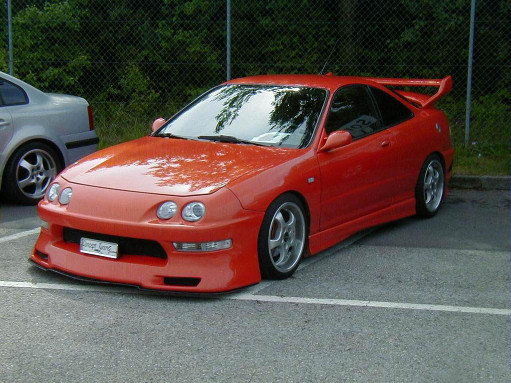
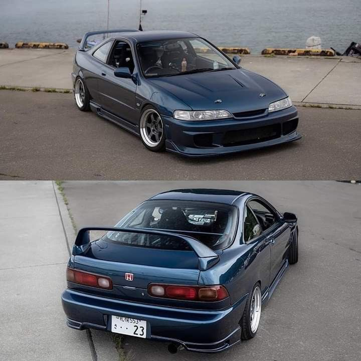
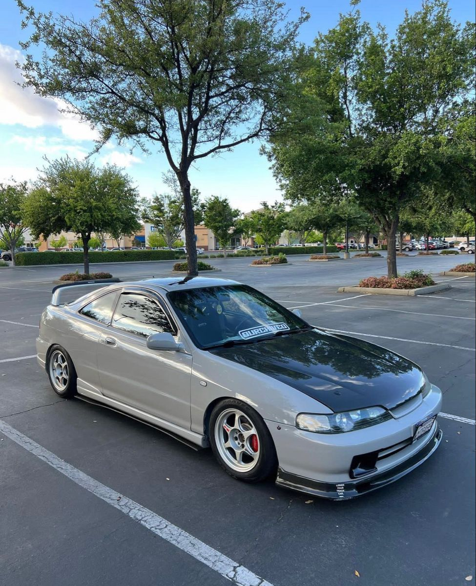

Миссия и аэродинамический прорыв
Дебют третьего поколения в 1993 году стал сенсацией. Honda создала автомобиль с бескомпромиссно спортивным имиджем, основанном на концепции «аэродинамического клина». Визитной карточкой стали узкие, вытянутые четыре круглые фары, мгновенно подарившие модели прозвища «бегемот» и «жук». Этот дерзкий дизайн четко отделил Integra от других моделей Honda, заявив о ее самостоятельном статусе.
Конструкция шасси – база для рекордов
Платформа была полностью новой. Ее основой стала полностью независимая подвеска на двойных поперечных рычагах (Double Wishbone) спереди и сзади — золотой стандарт Honda для спортивных моделей. Инженеры добились высокой жесткости кузова и почти идеального распределения веса, что предопределило феноменальную управляемость и стало залогом будущих гоночных успехов.
Начало линейки: от Si до GS-R
В начальный период предлагались ключевые комплектации:
-
Integra Si (RSi): С атмосферным двигателем B18B (1.8 л, 140 л.с.). Баланс доступности и спортивного характера.
-
Integra GS-R (VTi-R): Вершина «гражданской» линии с высокооборотным мотором B18C DOHC VTEC (178 л.с.). Именно эта версия задала высочайшую планку управляемости и отзывчивости для своего класса.


Видимые изменения рестайлинга (1996-2001)
В середине 1996 года Integra получила значительный рестайлинг. Целью было освежить дизайн, сделать его более современным и агрессивным.
- Передняя часть: Четыре круглые фары уступили место блокам прозрачных прямоугольных фар с отдельными круглыми секциями. Передний бампер был перепроектирован.
- Задняя часть: Изменилась графика задних фонарей. Задний бампер также подвергся коррекции.
- Интерьер: Обновилась ткань обивки, появились новые варианты отделки.
Технические и внутренние улучшения
Рестайлинг принес не только косметику:
- Повышена общая жесткость кузова.
- В стандартное оснащение для многих рынков вошли две фронтальные подушки безопасности.
- Произошли мелкие доработки в подвеске для улучшения повседневного комфорта.
Рождение и развитие легенды: Integra Type R
- Первое поколение Type R (DC2, 1995-1997): Появилось до рестайлинга с круглыми фарами. Двигатель B18C-R (200 л.с.).
- Второе поколение Type R (DC2, 1998-2001): Выпускалось после рестайлинга с прямоугольными фарами. Сохранило философию «Every Part» с мелкими эволюционными доработками.
Комплектации и рынки после обновления
После 1996 года линейка выглядела так:
- Базовая модель: Integra (с мотором B18B).
- Спортивная модель: Integra GS-R / VTi (с мотором B18C VTEC).
- Экстремальная модель: Integra Type R (с мотором B18C-R).
Феномен хищного имиджа в двух итерациях
Integra оставила два визуально различных, но равных по культовости образа.
- Дорестайлинговые версии (1993-1995): Ценятся пуристами и коллекционерами за оригинальный, более «дикий» дизайн с круглыми фарами.
- Рестайлинговые версии (1996-2001): Воспринимаются как более современные и «отточенные». Прямоугольные фары придали более агрессивное выражение.
Плюсы и минусы владения сегодня
Общие для всех плюсы:
- Иконический дизайн.
- Феноменальная управляемость.
- Культовый статус.
- Характер двигателей VTEC.
Общие для всех минусы:
- Коррозия (арки, пороги).
- Возрастной износ.
- Дороговизна и редкость запчастей для Type R.
- Повышенное внимание.
Ключевые отличия при выборе:
- Pre-Facelift (круглые фары): Большая редкость, часто выше коллекционная цена. Сложнее найти детали кузова.
- Facelift (прямоугольные фары): Более доступны на рынке. Часто оснащены подушками безопасности. Детали найти немного проще.
Культурное значение и коллекционная ценность
- Integra с круглыми фарами — это смелый первопроходец, шокировавший мир в 1993-м.
- Integra после рестайлинга — это отточенная икона, завоевавшая сердца в гоночных играх конца 90-х.
- В мире коллекционирования ранние Type R с круглыми фарами часто ценятся выше из-за эксклюзивности.
- Для многих именно образ Integra Type R с прямоугольными фарами является каноническим, собравшим все лавры побед.
Эта модель, в любом из ее обликов, навсегда останется
символом инженерного бесстрашия Honda и золотой эпохи японского спортивного автомобилестроения.

 89081317488
89081317488

 8(908)131-74-88
8(908)131-74-88.svg) fayther2@yandex.ru
fayther2@yandex.ru